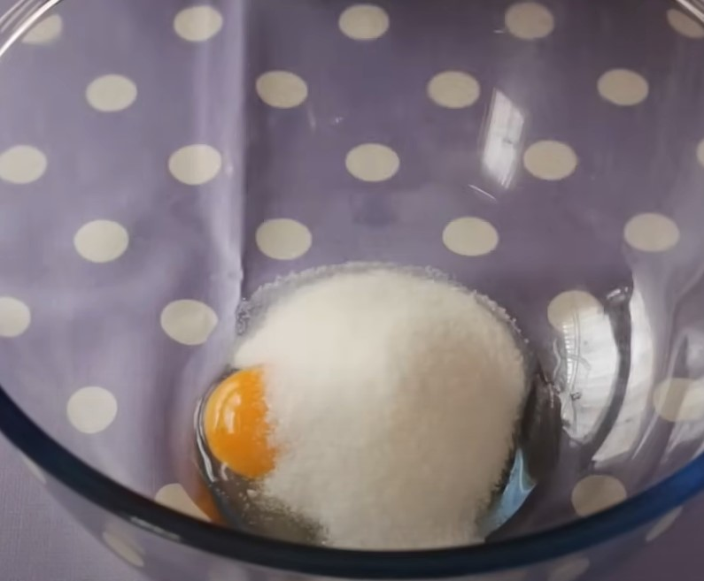
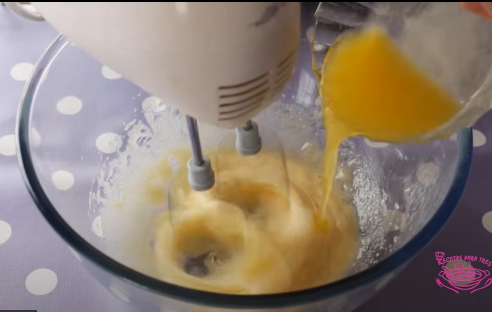
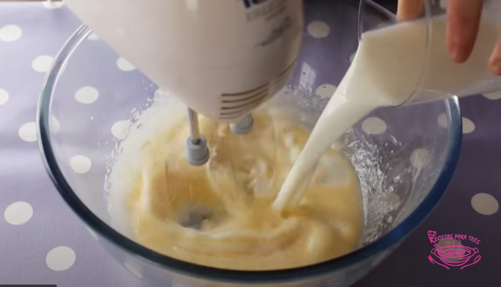
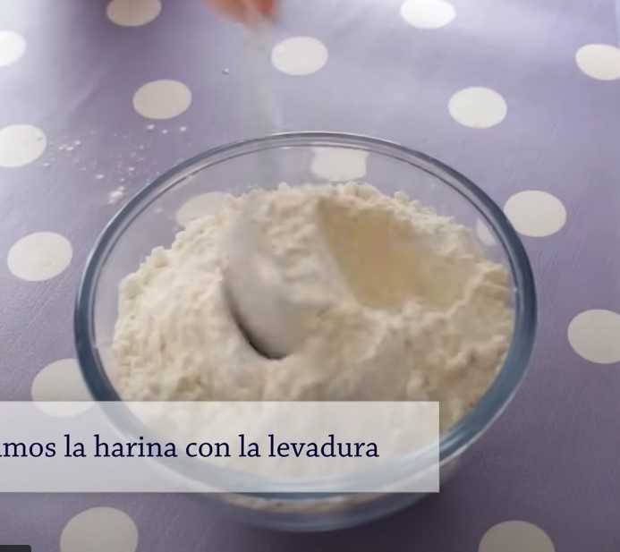
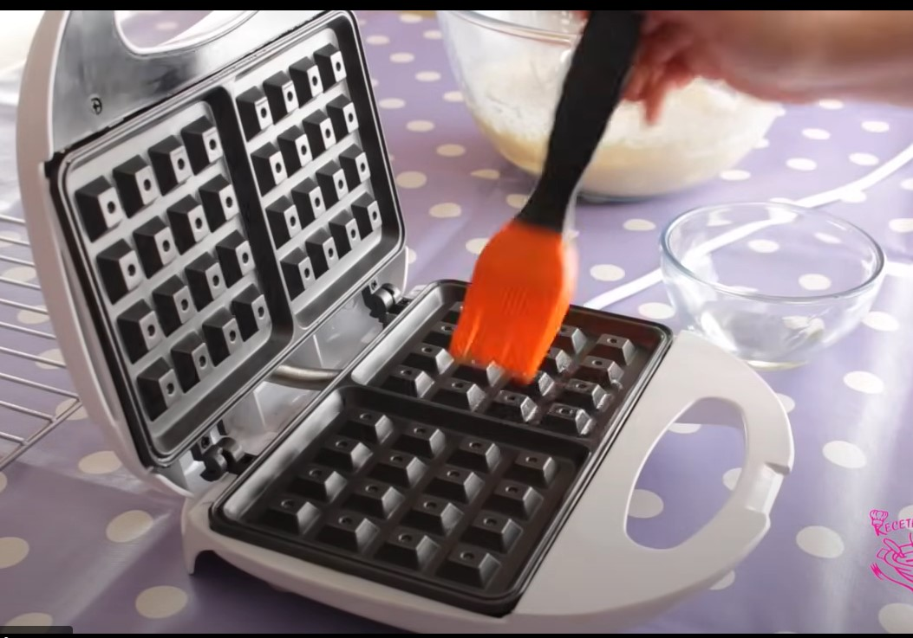
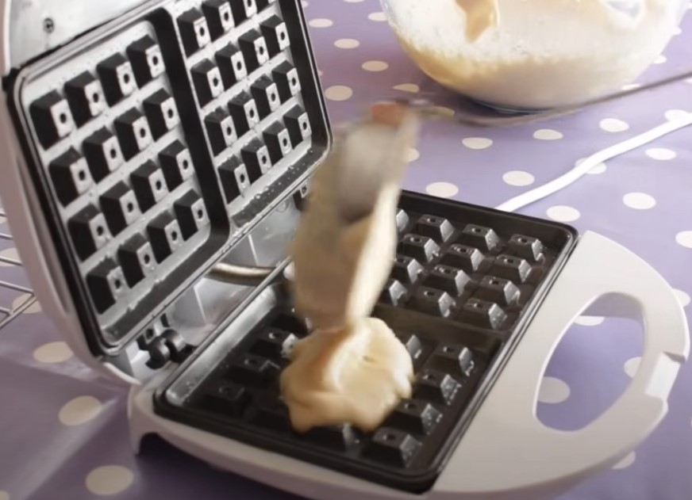
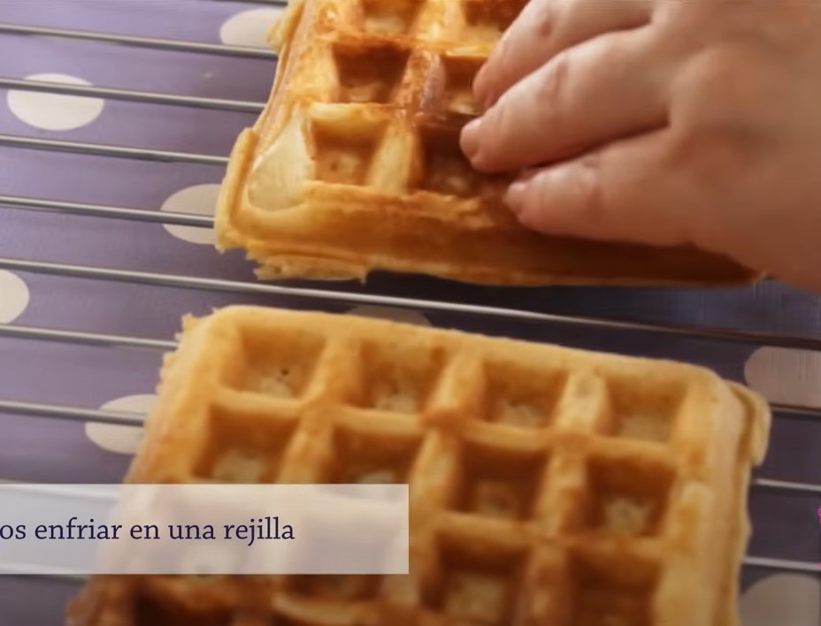
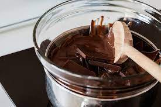

Gofres de chocolate
Ingredientes Índex Vídeos
Preparación
- Coger un bol, añadir los huevos y el azúcar y lo batimos (con batidora normalo de varillas). Paralelamente, habrá que calentar la mantequilla.

- Sin parar de batir, añadimos la mantequilla derretida y la leche.

- Mezclar la harina, la cucharadita de sal y la levadura aparte, lo tamizamos, lo incorporamos a la mezcla y batimos. De manera paralela, encender la gofrera para tenerlo precalentado y poner aceite de girasol en las placas.

- Una vez la masa esté homogenia, sin grumos y espesa, añadirla a la gofrera y retirarla al cabo de unos 3 a 5 minutos.

- Al retirarla con sumo cuidado, dejarla enfriar al aire libre en unas rejillas y realizar el paso previo con el resto dela masa.

- Cortar en trocitos el chocolate negro, calentarlo en el microondas e incorporarlo por encima de los gofress

- ¡Buen provecho!